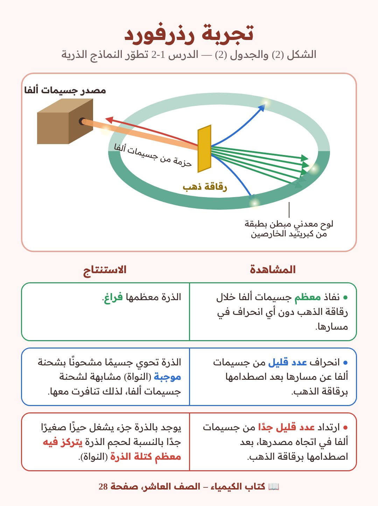
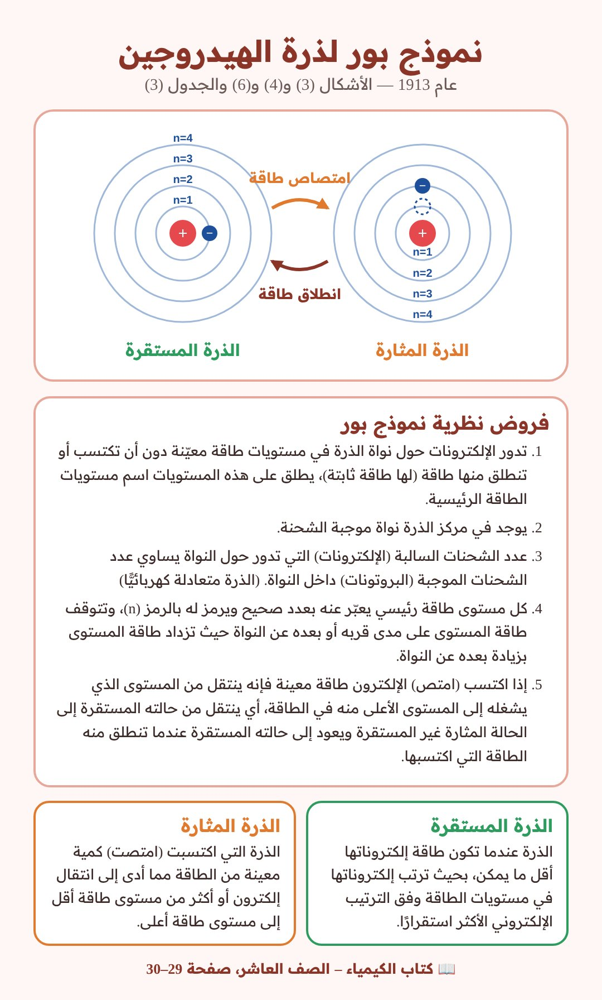
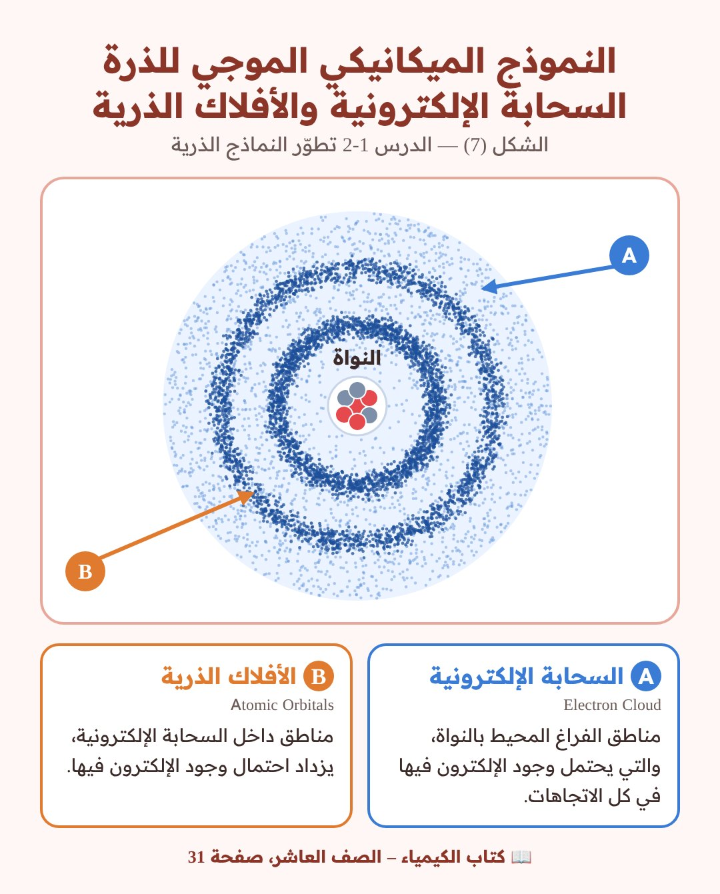
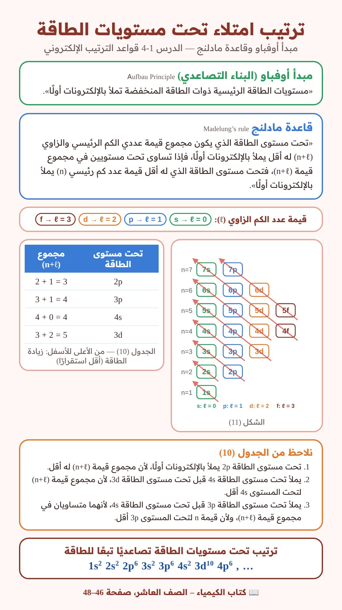
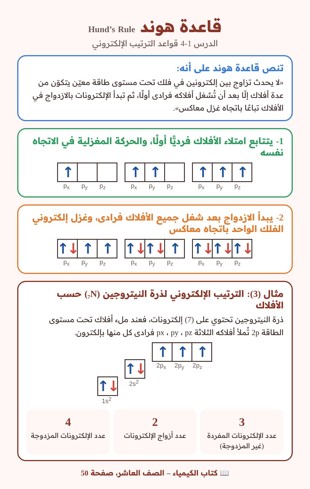
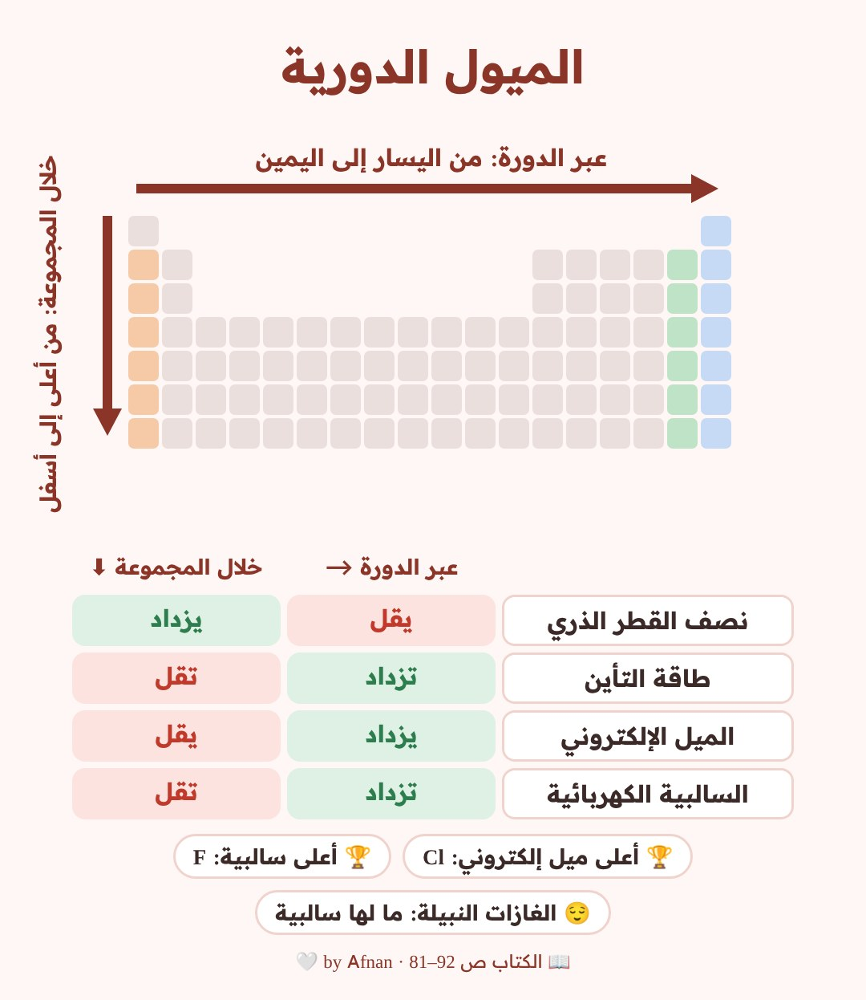

🎨 رسومات Afnan I
رسومات مبنية على كتاب الكيمياء للصف العاشر، ومع كل رسمة رقم صفحتها بالكتاب.
تجربة رذرفورد
📖 الدرس 1-2 تطوّر النماذج الذرية — الكتاب صفحة 28 (الشكل 2 والجدول 2)


نموذج بور لذرة الهيدروجين
📖 الدرس 1-2 تطوّر النماذج الذرية — الكتاب صفحة 29–30 (الأشكال 3 و4 و6 والجدول 3)


النموذج الميكانيكي الموجي: السحابة الإلكترونية والأفلاك الذرية
📖 الدرس 1-2 تطوّر النماذج الذرية — الكتاب صفحة 31 (الشكل 7)


ترتيب امتلاء تحت مستويات الطاقة: مبدأ أوفباو وقاعدة مادلنج
📖 الدرس 1-4 قواعد الترتيب الإلكتروني — الكتاب صفحة 46–48 (الشكل 11 والجدول 10)


قاعدة هوند
📖 الدرس 1-4 قواعد الترتيب الإلكتروني — الكتاب صفحة 50 (مثال 3: النيتروجين)


الميول الدورية (التدرج في الخواص)
📖 الدرس 2-3 الميول الدورية — الكتاب صفحة 81–92
